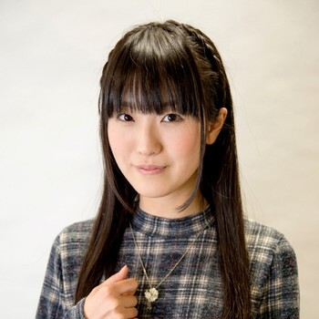

Yuki Kaji, double certains des personnages les plus emblématiques de l'animation japonaise, est reconnu pour sa polyvalence vocale et sa capacité à insuffler une profondeur émotionnelle à ses rôles. Célèbre pour avoir prêté sa voix à des protagonistes tels qu'Eren Yeager dans "L'Attaque des Titans" , Meliodas dans "Seven Deadly Sins" et Shoto Todoroki dans "My Hero Academia", Kaji incarne avec brio des émotions allant de la détermination ardente à la vulnérabilité poignante. Ses performances exceptionnelles lui ont valu une reconnaissance mondiale et font de lui l'une des voix les plus mémorables et appréciées de l'industrie de l'animation japonaise.
Doubleurs principaux
Yūki Kaji

Marina Inoue

Marina Inoue, doubleuse japonaise réputée, a prêté sa voix à des personnages mémorables tels qu'Armin Arlelt dans "L'Attaque des Titans", démontrant une polyvalence émotionnelle remarquable. Sa capacité à captiver les auditeurs grâce à sa voix expressive en fait une figure appréciée dans l'industrie de l'animation japonaise.
Yui Ishikawa
La doubleuse japonaise Yui Ishikawa, reconnue pour sa voix captivante, est célèbre pour avoir prêté sa voix à Mikasa Ackerman dans "L'Attaque des Titans". Ishikawa a su transmettre avec émotion la détermination et la force du personnage, contribuant ainsi à son impact mémorable. Son talent vocal remarquable en a fait une figure appréciée au sein de l'industrie de l'animation japonaise.
Pourquoi L'Attaque des Titans a changé de studio pour sa dernière saison ?
Les trois premières saisons de L'Attaque des Titans ont été réalisées par le studio WIT. Voici pourquoi le staff a confié ses tâches à un autre studio pour la quatrième et dernière saison de l'anime. L'un des anime les plus populaires des années 2010 est sans aucun doute L'Attaque des Titans. Basée sur le manga d'Hajime Isayama, la série, dont l'animation est d'une grande netteté et le scénario de type "dark fantasy", a attiré des spectateurs de tous horizons au cours de la dernière décennie. Ses trois premières saisons ont sans aucun doute été un point culminant dans le renouveau de la popularité mondiale des animes à cette époque, mais toutes les bonnes choses ont une fin. La quatrième saison de l'anime mettra fin à la série, mais elle présente une différence essentielle avec ses prédécesseurs. Alors que les trois premières saisons de L'Attaque des Titans étaient animées par WIT Studio, la quatrième est confiée à MAPPA, connu pour des succès tels que l'anime sportif Yuri !!! on Ice. Ce changement brutal de studio a pris de nombreux fans au dépourvu, d'autant plus que la dernière saison de la série a connu bien d'autres soucis de production. Voici la raison pour laquelle la série est entre de nouvelles mains pour son final, et ce qui a conduit WIT Studio à reprendre la série à succès. --publiée le 26 déc. 2022
Inspiration de l’Attaque des Titans
Hajime Isayama décide de faire une œuvre basée sur des Titans car ils ont une apparence brute et grossière et qu’ils provoquent un sentiment d’insécurité. L’idée originale provient à la fois d’une image du manga Jigoku Sensei Nūbē montrant une Joconde anthropophage sortir de son tableau pour manger les gens, mais également d’une rencontre avec un client ivre dans le cybercafé dans lequel l’auteur travaillait. En effet, cette personne qui l'empoigne au col, incapable de s’exprimer correctement, lui fait comprendre que l’être humain peut être l’animal le plus familier et effrayant du monde. Comme œuvres servant d’inspiration générale, l’auteur cite le jeu vidéo Muv-Luv Alternative (en), dans lequel des extraterrestres répugnants exterminent l’humanité qui ne recule devant rien, ou encore le manga ARMS par sa manière d’exploiter au maximum le format manga. Il déclare également être influencé par les jeux vidéo comme Mega Man Legends et Monster Hunter ainsi que le cinéma de monstres mettant en scène Godzilla, Mothra ou encore Gamera. Pour la conception des Titans, Isayama utilise notamment des modèles humains. Passionné de sport de combat, notamment les arts martiaux mixtes et le catch, il s'inspire de l’artiste martial Yushin Okami pour la forme Titan d’Eren ou encore le catcheur Brock Lesnar pour le Titan cuirassé. Il se base également sur des sports de combat pour retranscrire les techniques et postures des Titans. Par exemple, le Titan féminin utilise un mélange de boxe thaïlandaise et de ju-jitsu, tandis que le Titan cuirassé adopte un style mélant boxe, lutte et catch. Il utilise également un livre photo référençant diverses expressions humaines pour leur visage. Isayama désire que les Titans disposent d’une aura imposante, similaire à celle des catcheurs, afin de créer un sentiment de malaise et de peur aux lecteurs. De même, il dessine volontairement les Titans déformés, à la manière du tableau Saturne dévorant un de ses fils, pour « laisser le lecteur imaginer inconsciemment les détails ou parties non dessinées ». --publiée le 4 févr. 2023
Ville allemande de Nördlingen ayant inspiré l’auteur